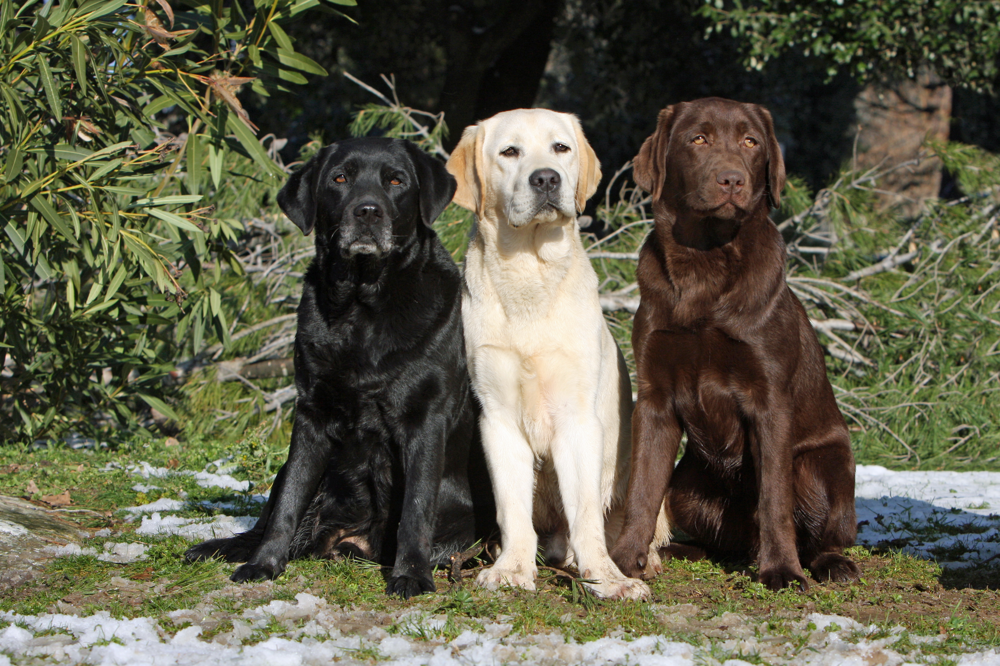

Woofkipedia


Meet the Labrador Retriver, friendly buddy!
The Labrador Retriever, often simply called “Lab,” is a beloved dog breed known for its friendly and outgoing nature. Labs are medium to large dogs with a sturdy, well-balanced build. They have a wide head, kind eyes, and a distinctive “otter tail.” Labs come in three primary colors: yellow, black, and chocolate. Their sweet face and lovable demeanor make them a favorite among families and individuals.
Varieties
-Labs exhibit two main types: Show Type: These Labs adhere closely to the breed standard and are often seen in dog shows. Working Type: Bred for their working abilities, such as retrieving game, these Labs excel in tasks.Personality
-Friendly: Labs are affectionate and thrive on human companionship. Intelligent: Their cooperative and intelligent temperament makes them versatile. Energetic: Labs are enthusiastic athletes, requiring regular exercise. Retrievers: Originally bred to retrieve game birds, they excel at following directions and retrieving objects. Gentle: Labs are even-tempered and gentle, making them ideal family pets...Gallery

Diet Chart
| Life Stage | Meal size |
|---|---|
| 2 to 3 months | 3-4 meals per day |
| 3 to 6 months | 2-3 meals per day |
| 6 to 12 months | 2 meals per day |
| 1 to 7 years | 2 meals per day |
| More than 7 years | 2 meals per day |